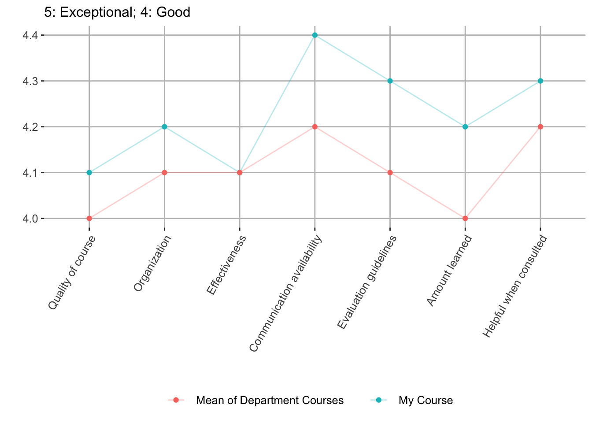
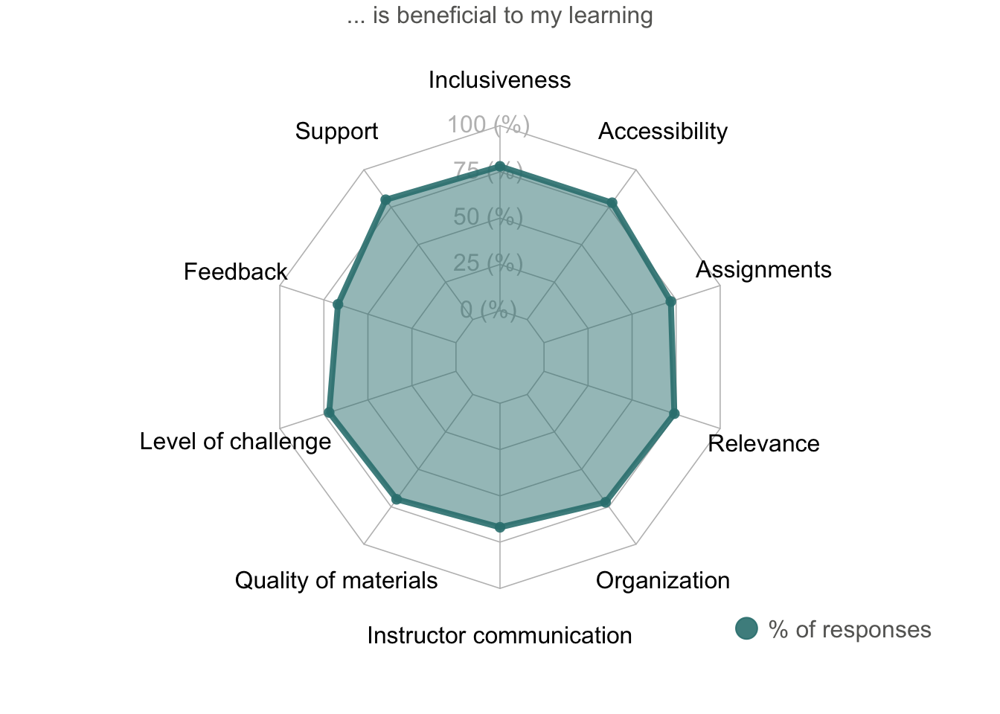

As an educator in economics, I aim to create an inclusive environment where students are able to apply quantitative & graphical skills, economic intuition, and economic theory to understand the evolving real-world issues, news, and events. I pride myself in helping students with developing economic tools to problem solve and being available to assist students outside of class whenever the need arises.
As a lead instructor at the University of Oregon, I work closely with students to help them achieve personal academic goals and organize graduate employee grading. Entering Fall 2020, I have been the sole instructor a total of five times over two distinct undergraduate courses, in person and online. I have taught classes with enrollment ranging from small groups of 20 students to large classes of 85 students. My course materials are shared in my Github repos, including written in R markdown, including syllabus, lecture slides, practice problems, and study guide.
EC 370: Money and Banking: Summer 2018, Winter 2019, Fall 2019, Spring 2020 (remote), Spring 2021 (forthcoming)
EC 311: Intermediate Macroeconomic Theory: Summer 2019
Entering Fall 2020, I have assisted in teaching 2 undergraduate classes a total of 3 times. Enrollment ranges from small groups of 16 students to larger groups of 48 students. As lab teaching assistant, I taught students how to use Stata to analyze data and identify causal relationships. I also led discussion and organized group activities.
EC 320: Introduction to Econometrics: Spring 2019
EC 202 : Intro to Economic Analysis: Macroeconomics: Spring 2017, Winter 2018
“Worked hard to make sure students understood the material. Made it evident that she cares and wants students to be successful. Was very reachable outside of the classroom. … Powerpoints were put together well. In-class problems correlated well with exam materials. Quizzes were good indicators of how well students know the chapter.” – Taylor Athan
“Honestly, this instructor is one of my favorite instructor so far. She’s so kind and when we have a quiz to midterm, she told us lots of details that we should focus on. Her class is interesting and I really like it.” – Pengfei Qin
“Xiang does a great job helping students understand course material. She also shares cool information that helps students learn more about the topic, such as interesting economics podcasts. … I think the course was really well organized. It was very helpful to have weekly practice problems which kind of served as optional homework, to help students practice course material. That helped me a lot with remembering things learned.” – Marie Rose Tonguino
“The course itself is structured well. Xiang provided us with many practice problems which helped with mastering the course material. … Xiang is a great professor who is very organized and utilizes class time well.” – Ashvin Ashoke
“Xiang did a great job of being clear about what was required for this course. Her lectures were informative.” – Tyler Hanson
“Professor Li was very good at getting through a lot of material in each class period.” – Sean Vermilya
Instructor was helpful in clarifying course material (during office hours) on various occasions. She was accessible, approachable, and seemed passionate about her students’ success.
Xiang Li was very supportive and understanding when emergency issues arose during the quarter. She was very helpful in explaining what was expected of the students.
I have never had a teacher as on top of posting Canvas as this class. Did an excellent job in communicating assignments and posting them quickly after class.

